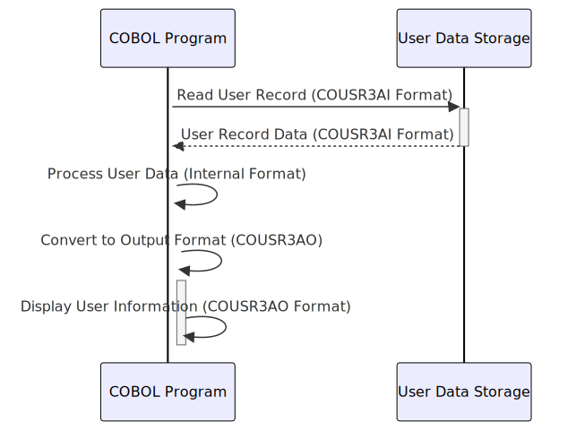

Gerado em: 1 de outubro de 2024
Título do Documento: COUSR03 Copybook - Estrutura de Informação do Usuário
Descrição Resumida:
O arquivo COUSR03.CPY define um copybook COBOL que descreve a estrutura das informações do usuário dentro de um aplicativo COBOL maior. Este copybook é crucial para gerenciar e exibir dados do usuário de forma consistente em todo o sistema.
Histórias do Usuário: Como administrador do sistema, preciso de uma maneira padronizada de armazenar e acessar informações do usuário, como ID do usuário, nome, tipo e mensagens do sistema, para que eu possa gerenciar contas de usuário e rastrear suas atividades com eficácia.
Épico Relacionado: 6 - Gerenciamento de Usuários e Segurança
Requisitos Técnicos:
COUSR3AI (Formato Interno): Esta estrutura foi projetada para processamento interno e armazenamento eficientes. Ele usa um formato compacto, potencialmente com codificação de caracteres diferente.COUSR3AO (Formato de Saída): Esta estrutura é adaptada para apresentar informações do usuário em telas ou relatórios. Ele usa um formato amigável, normalmente alinhado com os requisitos de exibição.COUSR3AO é definida como um REDEFINES de COUSR3AI. Isso significa que ambas as estruturas ocupam o mesmo local de memória, mas fornecem interpretações diferentes dos dados. Isso permite a conversão eficiente de dados entre formatos internos e de exibição.USRIDINI: ID do Usuário (identificador único)FNAMEI: Primeiro NomeLNAMEI: SobrenomeUSRTYPEI: Tipo de Usuário (por exemplo, ‘A’ para Administrador, ‘U’ para Usuário)TRNNAMEI: Nome da TransaçãoPGMNAMEI: Nome do ProgramaCURDATEI: Data AtualCURTIMEI: Hora AtualERRMSGI: Mensagem de ErroModelos Relacionados
USRIDINI String: O identificador exclusivo do usuário.FNAMEI String: O primeiro nome do usuário.LNAMEI String: O sobrenome do usuário.USRTYPEI String: O tipo de usuário (por exemplo, ‘A’, ‘U’).Configurações:
Melhorias de Código:
Melhorias de Segurança:
USRTYPEI). O acesso a essas informações deve ser controlado dentro do aplicativo para evitar divulgação ou modificação não autorizada.Diagrama Conceitual:
–Made by “Smart Engineering” (by Compass.UOL)–